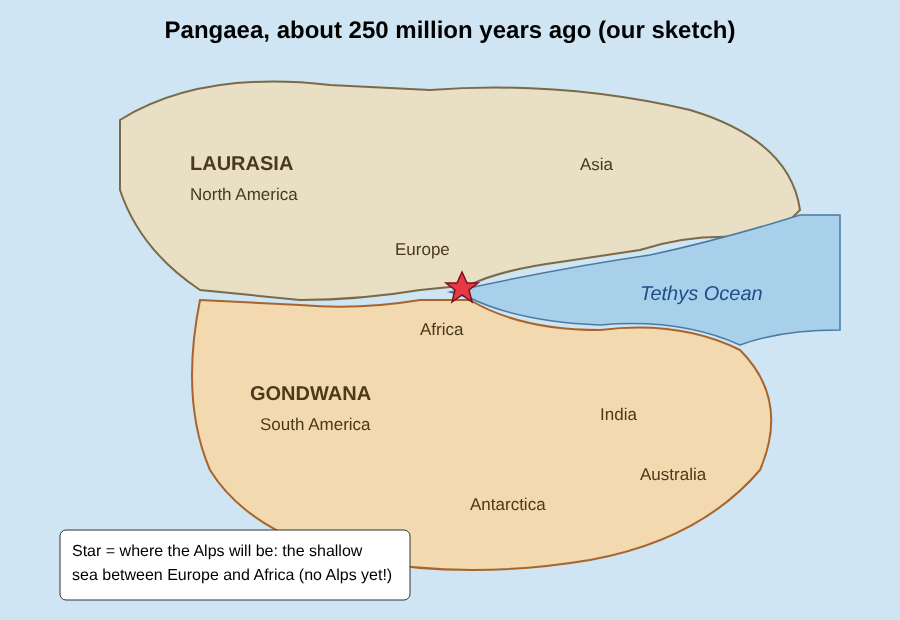
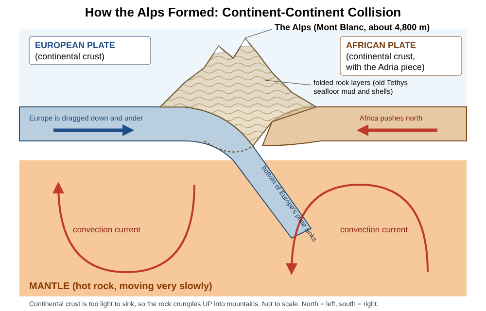
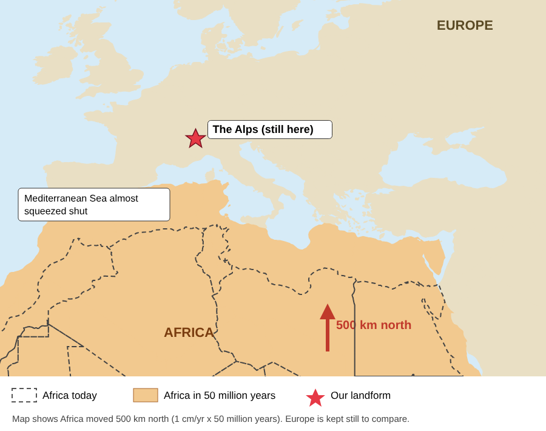

Due dates
Project work happens at home. Class time is short, so come to class with your panel already started.
Working without your teacher today?
- Sit with your group. Open this page and your group's Slides file.
- Find the date marked Next due above. Work on those panels first.
- Go to the first panel that is not done and do the next unchecked step.
- Stuck? Read that step again here, then ask your group. Still stuck? Write the question down for your teacher and move to the next step.
Set up your group file
Checklist
Your file's slide list
Make a copy of the panel templateYour group already made a file? Keep using it. Just check it has all 6 slides below.
Your 6 Google Slides tools
Insert › ImageCamera, Upload or Drive
Insert › Shape › Shapesstars, boxes, triangles
Insert › Line › Arrowor Shape › Arrows
Insert › Text boxlabels and captions
Insert › Line › Curveconvection loops
Ctrl + Alt + GHandy keys: Ctrl+D duplicate · Ctrl+Z undo · Shift+drag keeps shapes straight · double-click an image to crop
Then
Show where your landform's land was about 250 million years ago, when all the continents were joined as Pangaea. If your landform did not exist yet, say so and explain why.

Checklist
Which case is your landform?
Choose your landform at the top of the page to see a hint for your exact star spot.
Evidence
Find two pieces of evidence that the land at your landform has moved or changed. Show a picture of each clue and explain what it proves. Look in your Evidence Files doc and your Block 1.8 notes.
Open a copy of the Evidence FilesPick 2 clues from these 5 kinds
Checklist
How it formed
Draw a slice through the Earth under your landform. Show the plates, which way they move, and the convection in the mantle below that drives them.

Checklist
The 5 ways land gets built
Which one is under your landform? Block 1.9 and 1.10 teach these. Use the matching picture as your starting idea.
Model
Your model shows the process that built your landform, not just the shape. A visitor should be able to push, pull or slide part of it and watch the land change. Your teacher supplies clay and cardboard or foam. Hands leads the model.
Make a copy of the Model Planning SheetChecklist
Model recipes
- Stack 3 thin strips of different-color clay on cardboard.
- Put a foam block at each end.
- Visitor pushes the blocks together. The layers fold up into mountains.
- Two cardboard plates. Cut a slot in a box lid so one plate can slide down under the other.
- Add clay volcanoes on the top plate and mark the trench.
- Visitor pushes the ocean plate down through the slot.
- Two blocks with clay on top, pushed together.
- Put red clay "magma" underneath, between them.
- Visitor pulls the blocks apart. The gap opens and the red magma shows.
- Two blocks side by side on cardboard.
- Draw a road or fence straight across both.
- Visitor slides the blocks past each other. The road breaks and shifts.
- A cardboard plate that slides over a box. Mark one fixed red "hotspot" on the box.
- Make clay volcanoes, biggest over the hotspot, smaller and older down the line.
- Visitor slides the plate and sees new islands form over the hotspot.
Future
Calculate how far your plate will move in 50 million years, then show it on a world map: a star where your landform is today and a star where it will be.
Use the speed from Block 1.10 for your plate. 100,000 cm = 1 km.

Checklist
Docent talk
A docent is a museum guide. Your group gives visitors a 2-minute tour that answers the driving question. Type your script in the speaker notes under each panel (View › Show speaker notes). Reporter leads the talk, but everyone should be able to explain any panel.
A 2-minute script, panel by panel
Checklist
Is it museum ready?
Group jobs
Everyone works on every part. Each job leads one part.
How it's graded
| Criteria | 4: Exceeds | 3: Meets | 2: Approaching | 1: Beginning |
|---|---|---|---|---|
| Science explanation | Explains the full chain: convection moves the plates, the boundary type builds the landform, and how this changed over time | Correctly names the boundary type and explains how it built the landform | Names the boundary type but the explanation has gaps or errors | Boundary type missing or incorrect |
| Evidence and data | Two or more strong pieces of evidence, explained; speed calculation correct with units and shown on the map | Two pieces of evidence; speed calculation correct with units | One piece of evidence, or calculation has errors | No evidence or calculation |
| Model | Accurately shows the process, labeled, and the group can name one way it differs from the real thing | Shows the process and is labeled | Shows the landform but not the process | Model missing or unclear |
| Communication and teamwork | Docent talk answers the driving question clearly; every member contributed and can explain any part | Docent talk answers the driving question; every member contributed | Talk is unclear or one member did most of the work | No talk, or the group did not work together |